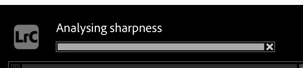
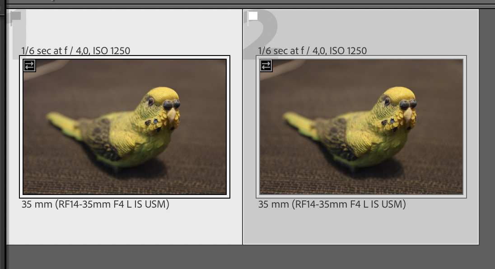
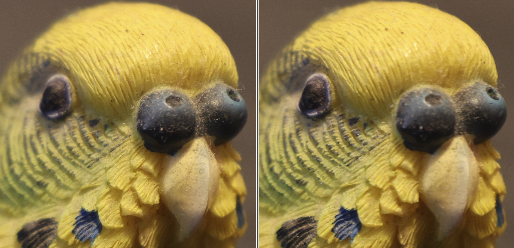

Wählt aus einer Serie von Wildtierfotos automatisch das
schärfste Bild aus, damit du nicht mehr jedes einzeln
vergrößern musst. Statt die ganze Aufnahme zu bewerten,
gewichtet das Plug‑in gezielt den Bereich, auf den die Kamera
fokussiert hat. Dadurch trifft das Plugin öfters die richtige Wahl im Vergleich zur reinen Gesamt‑Schärfe.
Außerdem nimmt das Plugin auch Stacks als Auswahl. Dann wird pro Stack das schärfte Foto markiert. Dies eignet sich perfekt für die Batch-Prozessierung von tausenden Fotos! In diesem Zusammenhang ist das "Auto-Stack" Feature von Lightroom besonders hilfreich.
Markiere in der Bibliothek entweder einen oder mehrere
Stacks, oder mindestens zwei verschiedene Fotos.
Dann in der Menüleiste:
Library → Plug‑in Extras → Pick Sharpest Photo.
Für jedes Foto wird das eingebettete Vorschaubild
extrahiert, in ein 18×12‑Kachel‑Raster
zerlegt und per Laplace‑Filter bewertet. Kacheln im
erfassten Autofokus‑Bereich zählen dabei
dreifach. Je nach Seriengröße dauert das ein
paar Sekunden.

Fortschrittsanzeige während der Analyse
Schritt 3
Ergebnis
Das schärfste Foto der Serie bekommt automatisch die
Pick‑Flagge, alle anderen bleiben unberührt.
Kein manuelles Reinzoomen und Vor/Zurück-Spammen mehr nötig!

Das rechte Foto wurde als schärfstes markiert und erhält die Pick‑Flagge
Hintergrund
Ein reiner Schärfewert über das gesamte Bild
reicht nicht. Im Vergleich rechts hat das linke Foto
insgesamt mehr scharfe Fläche – hier, weil
Gefieder und Schnabel viele feine Kanten liefern
– aber der Fokus sitzt auf dem Schnabel statt auf
dem Auge. Das rechte Foto hat eine geringere
Schärfentiefe, doch genau der Bereich unter dem
AF‑Messfeld – das Auge – ist scharf.
Deshalb gewichtet das Plug‑in die vom Autofokus
erfasste Kachel dreifach, bevor die drei schärfsten
Kacheln gemittelt werden. Liegen die tatsächlich
schärfsten Kacheln außerhalb des
AF‑Bereichs – etwa weil der Fokus gewandert
ist – können sie eine dreifach gewichtete
Hintergrundkachel trotzdem noch überstimmen.

Links: mehr scharfe Fläche insgesamt, aber der Schnabel ist im Fokus. Rechts: geringere Schärfentiefe, dafür sitzt die Schärfe exakt am AF‑Punkt – dem Auge.
Kleine Anmerkung meinerseits: Das schwierigste an der Erstellung dieses Tutorials was es, ein Foto mit der R5II zu schießen, bei dem der Fokus überhaupt daneben liegt... Das Plugin habe ich entwickelt weil ich meistens über 100 Fotos der gleichen Szene habe, welche alle scharf sind. Das Plugin dient primär dazu, minimale Änderungen im Schärfe-Ranking zu identifizieren und aus hunderten guten Fotos das beste zu flaggen.